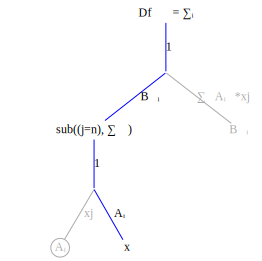
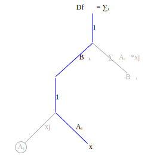
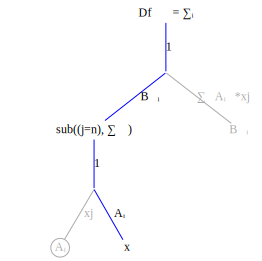
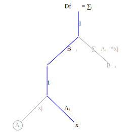

Computing tensor derivatives is conceptually simple, at least for tensor operations that can be represented as sequences of tensor contractions, e.g., $Ab = \sum\limits_{j} A_{ij}b{j}$.
Differentiation proceeds in simple steps:
- Explicitly mark the indices on all tensor terms.
- Transform the function graph into a derivative graph. Change tensor contractions into explicit summation operations.
- Find the variable being differentiated with respect to and compute index substitutions.
- Propagate the index substitutions up the graph.
Let's do a simple example first, before going into the details of why this works. Assume the function to differentiate is $f_j = A_{ij}b_j$.
∂sum(j,Aᵢⱼbⱼ)/∂bₖ =sum(j,∂(Aᵢⱼbⱼ/∂bₖ)) = sum(j, ∂(Aᵢⱼ/∂bₖ))bⱼ + Aᵢⱼ*∂bⱼ/∂bₖ
∂bⱼ/∂bₖ = except when j=k when it equals 1.
Create expression substitute(j=>k,Aᵢⱼ)
this gives:
= sum(j, 0*bⱼ + substitute(j=>k,Aᵢⱼ))
= substitute(j=>k, sum(j, Aᵢₖ))
propagate the substitution expression up through the sum
sum(j=k, Aᵢₖ)
∂sum(j,Aᵢⱼ*bⱼ)/∂bₖ = Aᵢₖ\[\frac{\partial b_j}{\partial b_k} = \begin{cases} 0 & j \ne k, \\ 1 & j=k \end{cases}\]
In the first example the summation operator disappeared because the summation index and the substitution index were the same. The summation is only non-zero when the summation index equals the substitution so the summation collapse to a single term.
The next example shows a case where this is not true. Given function $f_k = B_{ki}A_{ij}x_j$ compute $\frac{\partial f_k}{\partial x_n}$.
The illustrations show the differentiation starting from the original function graph on the left to the final derivative on the right. At each step the substitution operation ascends one level in the graph.
This is the function graph corresponding to $f_k = B_{ki}A_{ij}x_j$ 
The differentiation steps are shown in order from left to right. First the substitution variables are found by locating the variable node. In each succeeding step the substitution ascends one level in the graph. The final derivative is show at the far right.

  
 
In equation form
\[\frac{\partial f_k}{\partial x_n} = \sum{_i} B_{ki}A_{in}\]